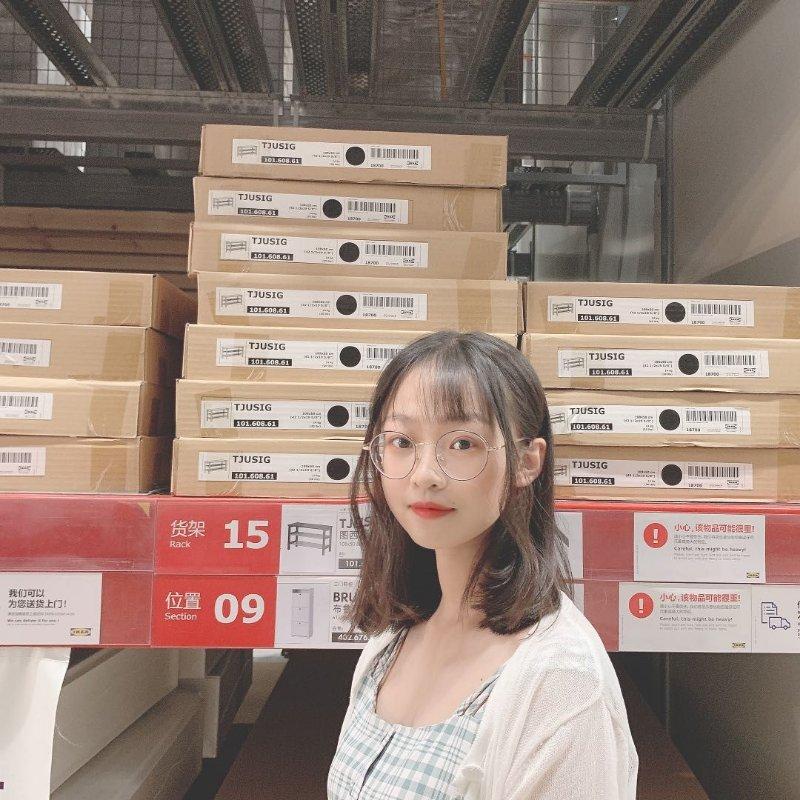

生日快乐呀佳佳！
没想到吧我给你准备了这样一个特殊的礼物
记得嘛 前几天我询问你的意见是做个人主页还是app开发
那时候我还感觉app开发并且进行运用能够做成一个可以落地的项目
后来慢慢才想到其实我可以开发一个主页，申请相应的域名，让这个主页以及域名中所有东西都属于你
怎么样，还不错吧，我也是第一次接触这个，也是初学一直在摸索，所以可能存在bug的话你不要介意呀！
祝你快乐 不只生日
今天你要20岁啦
记得之前在微博上看到一句：所谓20岁不过是心里住了两个十岁的小朋友
20岁的你也会这样的！
你会继续长成厉害的大人，也会成为永远万事胜意的女陔
要一直快乐一直开心！
2001-04-06
这是你最喜欢的一张照片，也理所应当成为这个主页的第一张照片
咦嘿
还记得，这张图片是在印在暖贴上的照片，也是当时我选择很久才从好多好看的图片里选出的

你的生日当然要纪念你的成长过程啦
所以我找了你各个年龄的照片，哈哈当然这些照片也全都来源你
20年前的今天你成为这个世界上最最最最最最最年轻的女孩
以后的每一天既要成为一个厉害的大人也不能忘记永远都是一个开心快乐的小女孩

想了好久好久，2020年参加新生迎新晚会肯定是佳佳这一年非常开心、印象深刻的时刻啦
最近也问过你，发现你现在也没有留存当时的视频
所以我就在网上找了你们当时的视频，并把它保留下来并且放在这个网站上，让这个时刻能够得到保留
本来想着 能够直接可以在网页就进行播放的，但是我看资料看了好几夜也还没搞懂双声道（我设置了背景音乐）的兼容问题
呜呜，我太笨了，试了好多方法都还是不兼容
所以我只好把它放到b站（因为相比腾讯、土豆这种，b站无广告，不需会员还是蛮不错的）上了，所以我把b站链接放在这里啦
2020-10-03
永远快乐 永远积极向上
佳佳 祝你快乐 不只生日